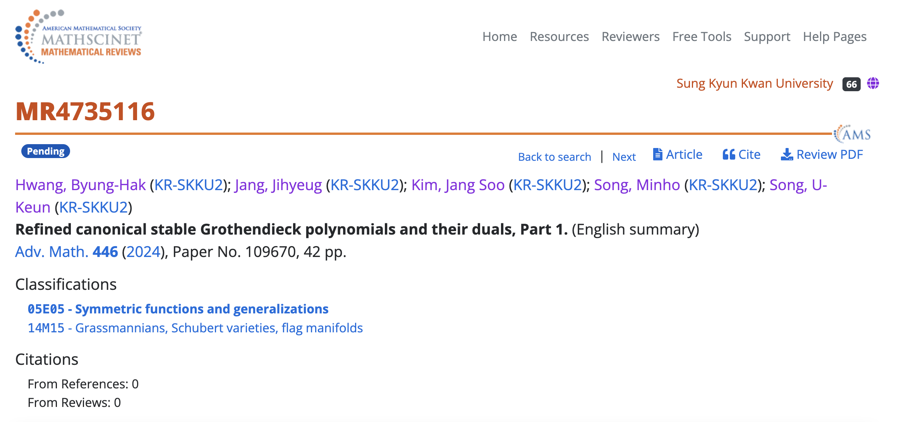

Newbiemacs Lecture 1
Jang Soo Kim
May 26, 2025
Introduction
- Newbiemacs는 Emacs를 기반으로 개발한 수학자를 위한 프로그램
- AI가 latex 코드를 생성해 주는 시대에 latex을 배울 필요가 있을까?
- AI로 코드를 생성한 후 그것을 편집하는 것이 중요함
- Newbiemacs는 latex 코드를 원하는 대로 편집하는데 편리한 기능을 제공
History
- 2022년 10월부터 Newbiemacs 개발 시작
- 현재 국내외 10명정도 사용중
Features of Newbiemacs
- pdf와 tex 파일 통합 관리
- 다양한 LaTeX 편집 기능
- 손쉬운 사용자 스니펫 추가
- 간편한 BibTeX 사용
Basic notions
Notation
| key | description |
|---|---|
C |
Ctrl key |
M |
Meta key (Command for Mac and Alt for Windows) |
RET |
Return key (Enter key) |
M-<backspace> |
hold M and then press <backspace> |
M-RET |
hold M and then press RET |
Newbiemacs screen
- To visit this: click Bee icon
- Or type
M-<backspace>

Newbiemacs home folder
- Newbiemacs folder:
~/newbiemacs - folder icon in Newbiemacs screen
Organize pdf and tex files
How to find pdf or tex file
- Type
portin the Newbiemacs screen. - Or click the pdf or tex icon anytime.
Add new pdf files
How to add a pdf file from arxiv
Visit the title page of a paper from https://arxiv.org/

- (Skip this in macOS.) Copy the address.
- Type
ain Newbiemacs screen.
Exercises
- Add 3 papers from the arxiv.
- Open the 3 papers that you downloaded.
How to add a pdf file of a published paper
- Download a pdf file.
Find the paper in MathSciNet.
 
- Click
Cite, and then clickCopy. - In Newbiemacs screen, type
m.
Exercises
- Add 3 papers using mathscinet.
- Open the 3 papers that you downloaded.
How to create a new tex file
- Type
nin the Newbiemacs screen. - Enter a file name.
- Choose a template file.
Exercises
- Create 3 tex files.
- Open the 3 tex files that you created.
How to delete, copy, or rename pdf or tex files
- Open the Newbiemacs home folder.
- Goto the pdf or tex folder.
- You can delete, copy, or rename files as you normally do.
LaTeX Features
How to edit a tex file
- Compile:
M-RET b - View pdf:
M-RET v - pdf to tex: Command+Shift+mouse click (mac)
- pdf to tex: double click (win)
The dollar key
- $키를 한번 누르면 inline math mode
- $키를 두번 누르면 display math mode
- 수식 입력후 $키를 누르면 수식 밖으로 커서가 이동
- 한글 입력 상태인 경우 한영 자동 전환
- 한영 전환:
M-i
수식 전환
M-RET t i: inline math에서 display math로 변환M-RET t e: display math에서 \begin{equation} 환경으로 전환
화면의 수식 복사
M-RET p누르고 복사를 원하는 수식 레이블 입력
Insert environments
M-RET e누르고 원하는 environment 선택M-RET e RET현재 environment를 변경
Define new macros
M-RET n m
Greek letters
- To insert
\alpha, type`a
Insert references
M-RET r r
Add screenshots
- Take a screenshot.
- Go to your tex file.
- Press
M-RET i f.
Change variables
- Select the region.
- Press
M-RET t v.
Move the cursor
- Type
M-n - Type the first letter of the word you want to move.
- Type the label.
BibTeX
How to open the main bib file
- In Newbiemacs screen
x 5 - You may copy and paste the content of your own bib file to this file.
How to use the main bib file
- In your tex file, type
M-RET B T This will add the following two lines in your tex file.
\bibliographystyle{abbrv} \bibliography{(path-to-newbiemacs)/newbiemacs/nbm-user-settings/references/ref.bib}- To insert a citation, type
M-RET r c
How to toggle the bibliography
- In your tex file, type
M-RET B T - This will toggle the above two lines to the actual bibitems.
- This may be useful if you want to share your tex file with your collaborators without sharing the bib file.
How to add a new bibtex item from MathSciNet
- Copy a bibtex item from MathSciNet or zbMath.
- In a latex file, type
M-RET B nand follow the instructions.
How to add a new bibtex item from arxiv
- Go to the arxiv page of the article you you want to cite.
- Click "Export BibTeX Citation" on the right box and copy the contents.
- In a latex file, type
M-RET B nand follow the instructions.
Snippets
What is a snippet?
- It is a code block that you can insert quickly.
How to use snippets?
- Type the key of the snippet.
- Type
TABkey. - You may enter contents and type
TABto exit the snippet.
How to see existing snippets?
M-RET s t
Exercises
- Use the following snippets:
fr,bilp,lasu,,su;,pr,,pr;++,--,..,,,<<,<<=,>>inv(in math mode trya invandTAB)iffxn+,xn,
- Discover 3 more snippets on your own.
How to create a new snippet?
M-RET s q: create a simple snippetM-RET s n: create a complicated snippet
Exercises
- Create a snippet with key skku and content Sungkyunkwan University
- Create 3 more snippets on your own.
Snippet syntax
- Example
# -*- mode: snippet -*-
# name: frac
# key: fr
# --
\frac{$1}{$2}
- Example
# -*- mode: snippet -*-
# name: x1+...+xn
# key: xn+
# --
${1:x}_1 + \cdots + $1_{${2:n}}
Exercises
- Create a snippet for the Vandermonde determinant.
- key: vdm
content
\prod_{1\le i<j\le n}(x_i-x_j)- Make
nandxbe modifiable.
- Create 3 more snippets on your own.
Extra
Update Newbiemacs
- Type
Uin Newbiemacs screen.
Torus Game
- Click Torus icon.
Change themes
M-o N T ?: helpM-o N T c: Change theme
Org mode
- Organize everything!
Vim
- In Newbiemacs screen
x eand select vim.